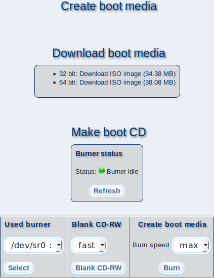

This dialog allows you to download boot media ISO files for m23 clients. You can burn these on an optical disk or use them directly in the virtual optical drive in your virtualization software. If your m23 server has a CD/DVD burner built-in, you can burn a boot medium directly.

Subsections
root
2018-01-09